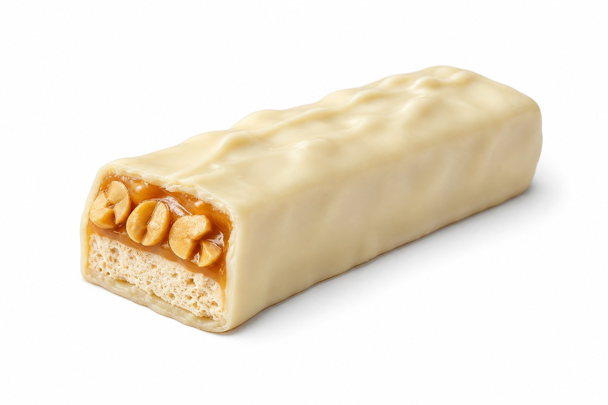

Batony
Snickers White
Snickers White: 8 g białka, 510 kcal, 55 g węglowodanów i 28 g tłuszczu na 100 g. Kategoria: Batony.
Kalorie510 kcalna 100 g
Białko / proteiny8 g
Węglowodany55 g
Tłuszcz28 g
Cena (szac.)~1,73 złza 100 g
Ceny zaktualizowano: maj 2026 (szacunek — ceny w popularnych supermarketach)
Porcja: sztuka (49g)
| Kalorie | 250 kcal |
|---|---|
| Białko | 3.9 g |
| Węglowodany | 26.9 g |
| Tłuszcz | 13.7 g |
| Cena (szac.) | ~0,85 zł |
Szczegółowe składniki odżywcze na 100 g
| Wartość energetyczna (kalorie) | 510 kcal |
|---|---|
| Białko (proteiny) | 8 g |
| Węglowodany | 55 g |
| Tłuszcz | 28 g |
| Tłuszcze nasycone | 12 g |
| Tłuszcze nienasycone | 16 g |
| Witaminy i minerały | Magnez, Żelazo, Wapń |
| Współczynnik kcal / 1 g białka | 63.8 |
| Cena produktu (szac. za 100 g) | ~1,73 zł |
| Cena za 100 g białka (szac.) | ~21,68 zł |